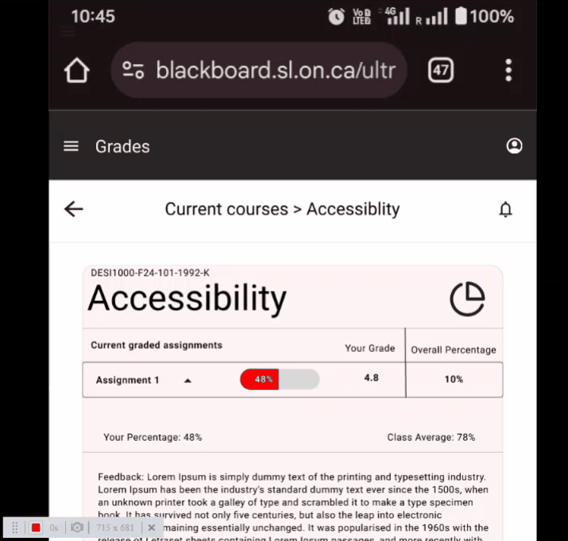
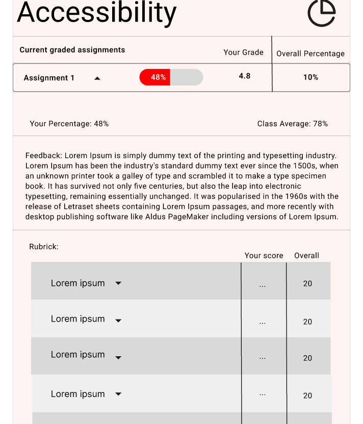
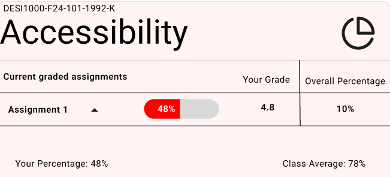
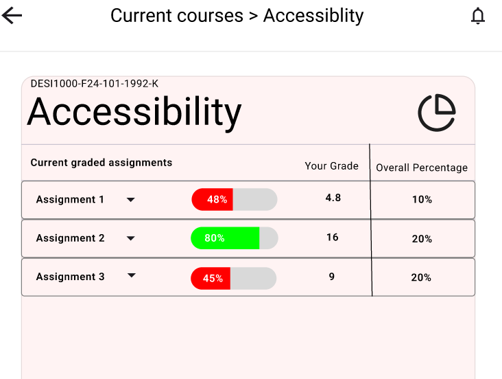
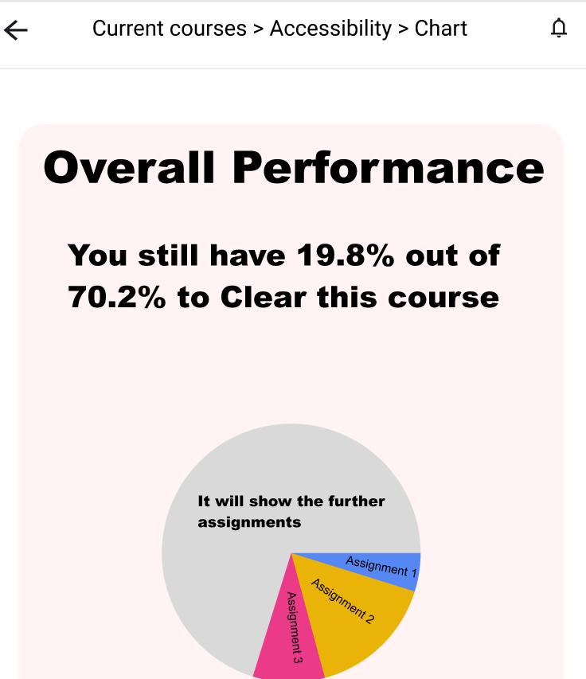
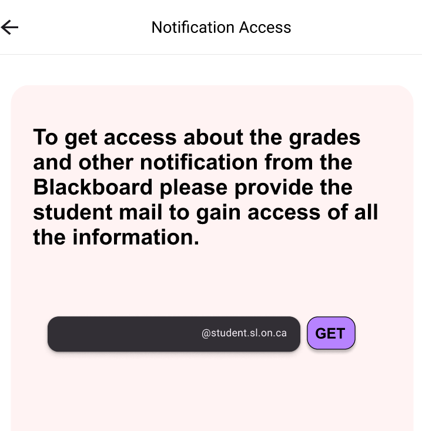

In designing the mobile prototype for Blackboard's grades section, I deepened my understanding of mobile-first design principles and the unique challenges of creating a responsive, user-friendly interface for students. Through user feedback and my research, I identified key pain points like difficulty navigating grade breakdowns and accessing timely feedback. The struggle was in optimizing the interface to deliver essential information clearly on a smaller screen while ensuring intuitive navigation. I focused on simplifying interactions, such as incorporating a course carousel and prominently displaying feedback, without overwhelming the user. Iterating the design for mobile required careful consideration of touch interactions, visual hierarchy, and space constraints, ultimately leading to a streamlined prototype that aims to enhance student engagement and support better learning outcomes. This experience reinforced the importance of user testing, adaptability, and designing for varied screen sizes to meet the needs of diverse users.
These are some of the features that have been redesigned from the existing design.

Each course-specific grade page should provide a detailed breakdown of marks and evaluations, including assignment scores, weighted grades, and instructor comments. This transparency will help students understand their academic standing and areas requiring attention.

Comparative performance indicators can be integrated to help students understand their strengths and areas for improvement. By showing relative performance metrics—such as class averages, percentile rankings, or subject-specific trends—students can better gauge their standing and take proactive steps to enhance their learning.

As students complete assignments, their cumulative grade updates dynamically based on the weights of completed work. This approach helps students understand how each assignment influences their overall performance, allowing them to prioritize efforts on higher-weighted tasks while maintaining steady progress throughout the course.

Graphical representations, such as line graphs and progress charts, will help students visualize their academic journey over time. Seeing trends in their performance can motivate students to track their progress and make informed decisions about their learning strategies.

A notification system should be implemented to alert students as soon as feedback is available for their assignments or exams. Timely notifications via email or in-app alerts will ensure that students stay informed without constantly checking the portal, helping them engage with their evaluations more effectively.